Console
Write multi-line commands
When in the console's multi-line editing mode, you can treat blocks of text as if you were using a standard text editor. Shift + Enter allows you enter multi-line mode in the console.
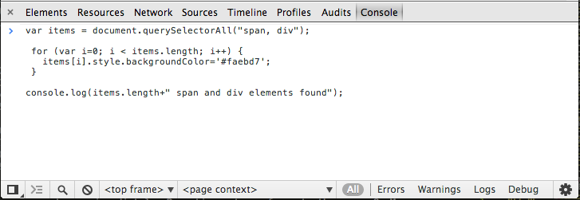
This can be particularly helpful when writing JavaScript that is more complex than a simple one-liner. Once you've entered a block of text, press Enter at the end of the command and it should run.
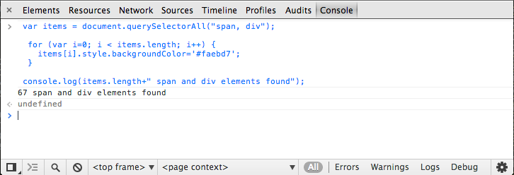
For a multi-line console which supports persistence, read about Snippets - a feature which can save and execute custom snippets of JavaScripts which are always available inside the DevTools.
A shortcut to launch in inspect-element mode
Ctrl + Shift + C or Cmd + Shift + C will open up DevTools in inspect element mode (or switch focus to it) so you can inspect the current page immediately. Repeating returns focus to the page. On Mac, use Cmd + Shift + C to achieve the same.
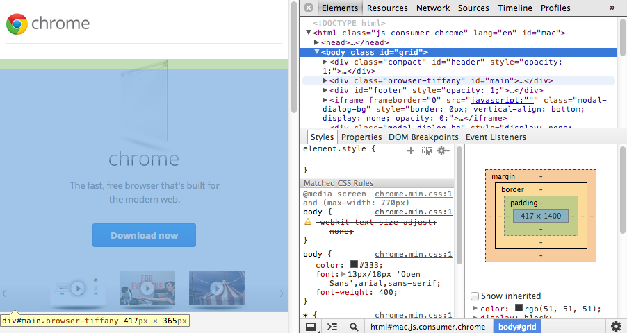
More: Using The Console | DevTools Docs
Support for the console.table command
This command logs any supplied data using a tabular layout. Some examples of how to use it include:
console.table([{a:1, b:2, c:3}, {a:"foo", b:false, c:undefined}]);
console.table([[1,2,3], [2,3,4]]);
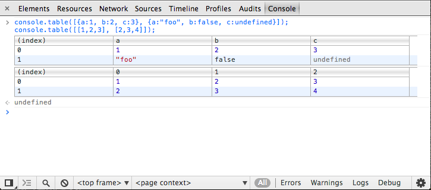
There is also an optional 'columns' parameter which takes the form of an array of strings. Below, we define a family object containing many "Person"s and can then choose which columns we would like displayed using it:
function Person(firstName, lastName, age) {
this.firstName = firstName;
this.lastName = lastName;
this.age = age;
}
var family = {};
family.mother = new Person("Susan", "Doyle", 32);
family.father = new Person("John", "Doyle", 33);
family.daughter = new Person("Lily", "Doyle", 5);
family.son = new Person("Mike", "Doyle", 8);
console.table(family, ["firstName", "lastName", "age"]);

whilst, if you just want to output the first two of these columns, use:
console.table(family, ["firstName", "lastName"]);
More: Support for the console.table command has landed | G+.
Preview logged console objects
Objects logged using console.log() can be previewed directly inside the DevTools without further work on your part.
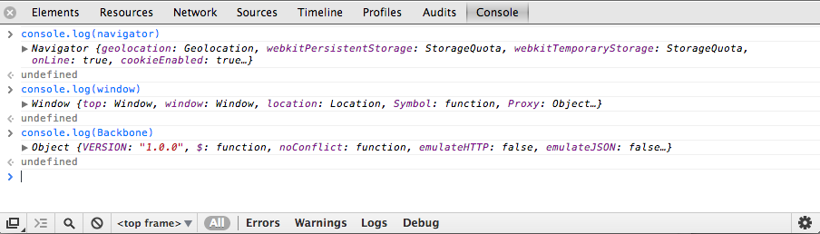
Pass multiple arguments to styled console logs
As we've documented you can add style to your console logs via %c, just like you can in Firebug. e.g
console.log("%cBlue!", "color: blue;");
Blocks specifying multiple styles are also supported:
console.log('%cBlue! %cRed!', 'color: blue;', 'color: red;');
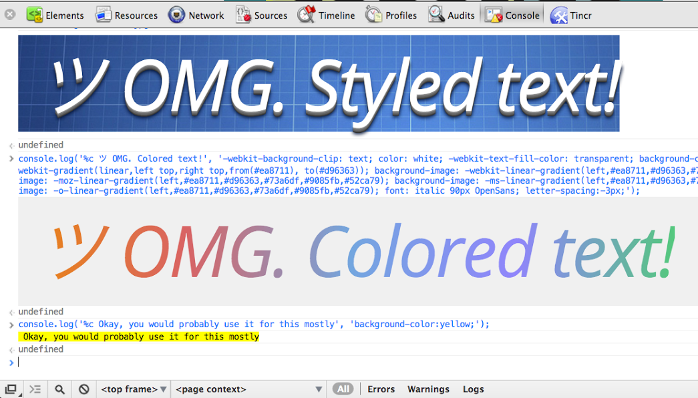
More: Styled Console Logging In The DevTools | G+
Shortcut to clear the console history
With the console open you can easily clear your console history using the Ctrl + L or Cmd + L shortcut. A clear() command is also available at the shell prompt as is the console.clear() method via the Console API from JavaScript.
Become a keyboard ninja
With the DevTools open you can just use ? to open the General Settings and from there you can navigate to the Shortcuts panel to see all of the supported shortcuts in one convenient place.
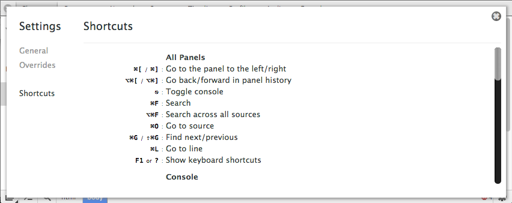
Accessing elements from the console
Select an element and type $0 in the console, it will be used by the script. If you have jQuery on the page, you can then use $($0) to reselect the element in the page.
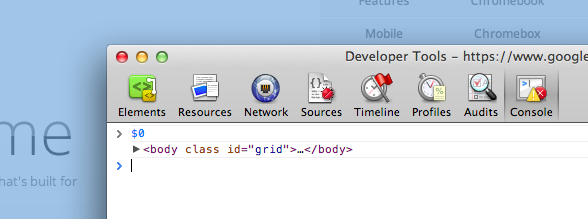
You can also right click on any element output to the console and click 'Reveal in Elements Panel' to find it in the DOM.
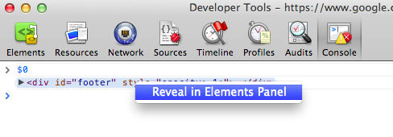
Querying the DOM using XPath expressions
XPath is a query language for selecting nodes from documents and generally returns a node-set, string, boolean or number. You can use XPath expressions to query the DOM from the DevTools JavaScript console.
The $x(xpath) command will allow you to execute a query - see below for an example of how to search for the images in a page using $x('//img'):
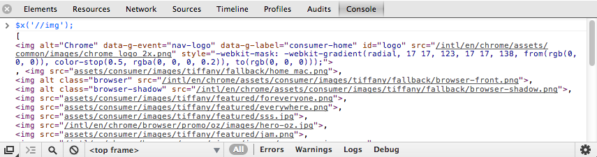
However, the function also accepts an optional second argument for the path context - i.e $x(xpath, context). This lets us select a specific context (e.g an iframe) and run an XPath query against it.
var frame = document.getElementsByTagName('iframe')[0].contentWindow.document.body;
$x('//'img, frame);
which queries the images within the specified iframe.
Access the last console result
Using the $_ helper will allow you to access the last console result. We can demonstrate using this with another XPath example:
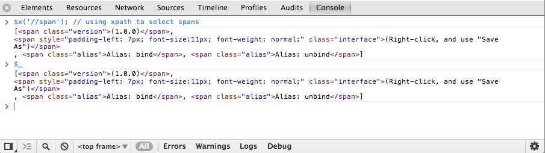
Using console.dir
The console.dir(object) command lists out all of the properties of a provided object as an expandable JavaScript object. Below is an example displaying an expandable object representing the properties found under document.body.
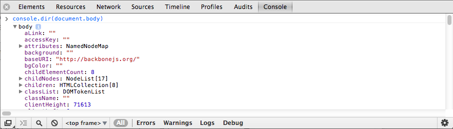
Running the JS console in a specific iframe
Along the bottom bar of the DevTools are drop-down options that change depending on the context of your current tab. When you’re in the Console panel, there’s a drop-down that allows you to select the frame context that the console will operate in. Select your frame in the drop-down and you’ll find yourself in the right context in no time.
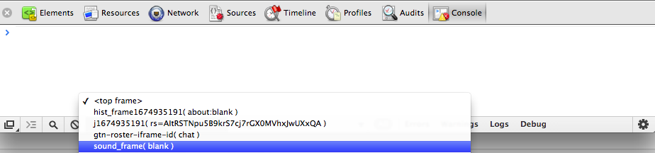
Stop the console clearing when navigating to a new page
Sometimes you want to be able to preserve your console log history when you navigate to a new page. To enable this, right-click in the console and select "Preserve Log upon Navigation". When you navigate to a different page from the current tab, the console history will no longer be cleared.
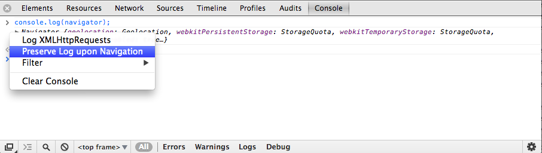
Benchmark loops using console.time() and console.timeEnd()
console.time() begins a new timer using a specific label. When console.timeEnd() is called using the same label the time is stopped and the elapsed time between both is logged to the console. This is particularly useful for benchmarking loops or code which doesn’t call a function.
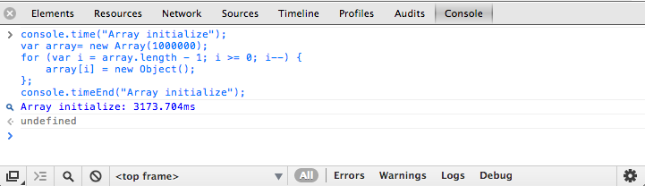
Profiling with console.profile() and console.profileEnd()
With the DevTools open, calling console.profile() begins a JavaScript CPU profile. A label for the profile can be optionally passed, as seen below in console.profile("Processing"). To complete a profile run, call console.profileEnd().
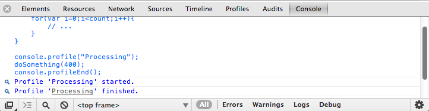
Each profile run gets added to the Profiles panel:
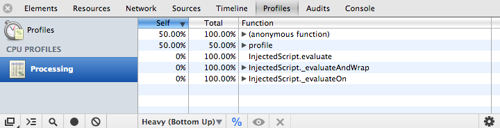
It is also added to the console.profiles[] array for inspection later on:
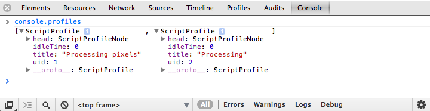
For more key tricks with the console, dive into Using The Console:
- A place to log diagnostic information using methods provided by the Console API, such as
console.log(), orconsole.profile(). - The methods provided by the Command Line API, such as
$()command for selecting elements, orprofile()to start the CPU profiler.
 , unless you're debugging code that's wrapped in try/catch.
, unless you're debugging code that's wrapped in try/catch.


 at the bottom of the DevTools window
at the bottom of the DevTools window